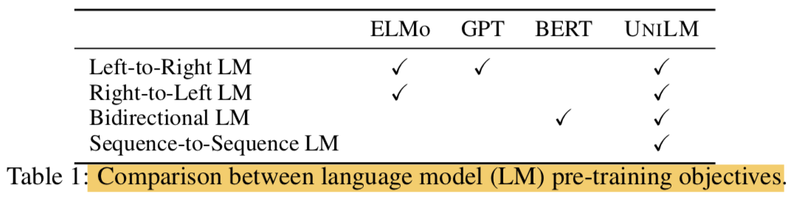
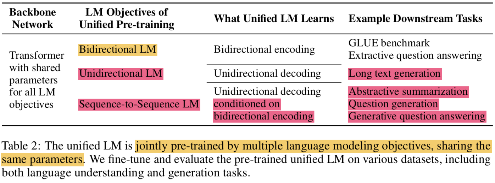
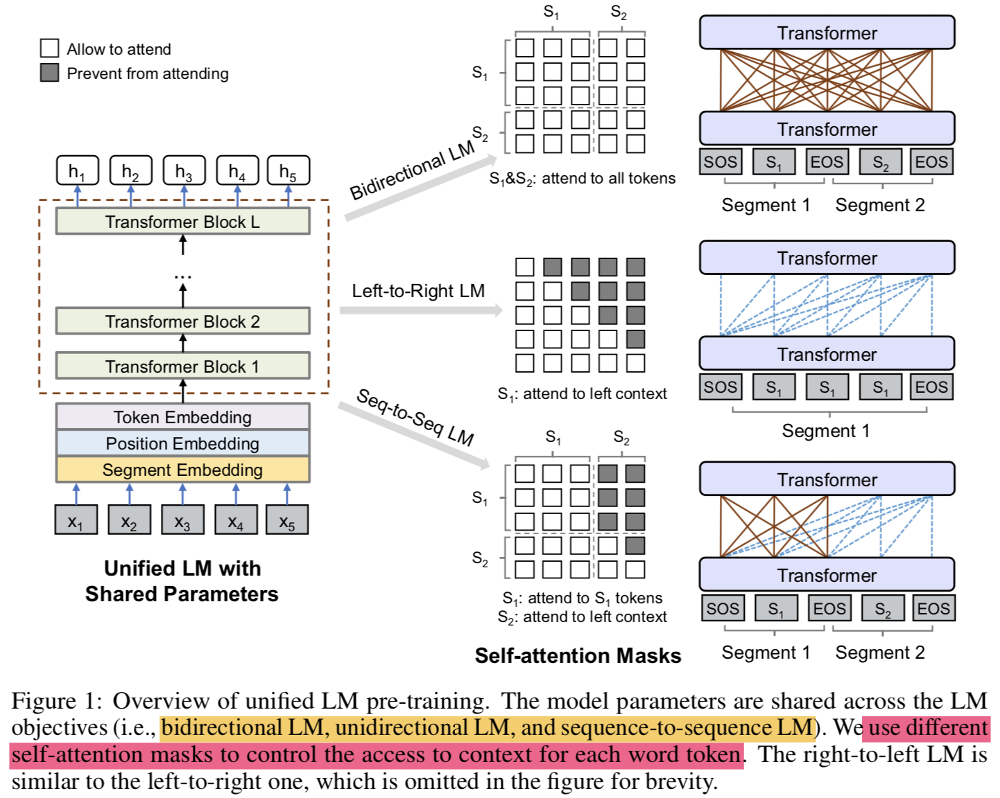
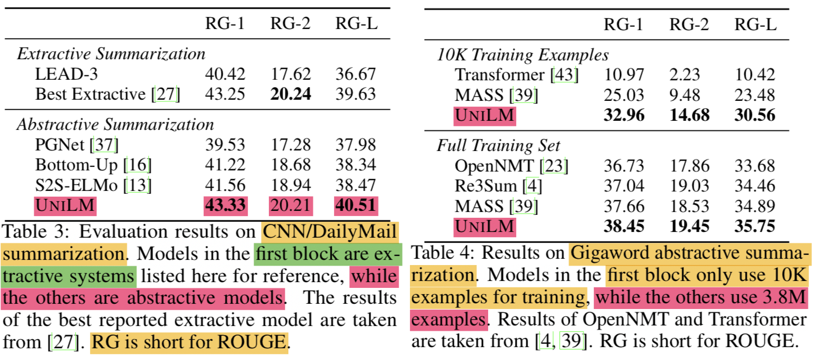
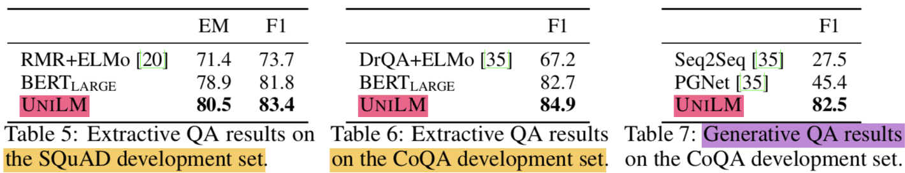
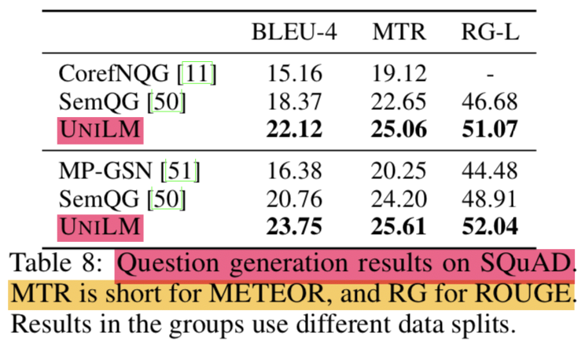
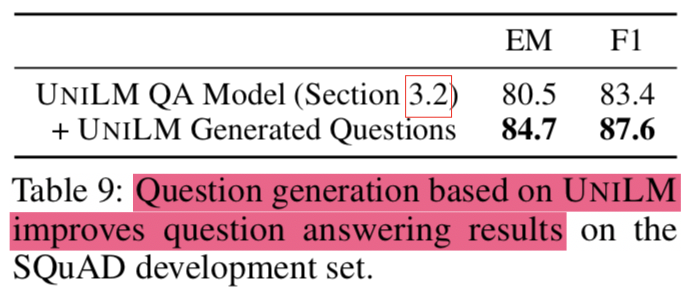

LM pre-training은 다양한 NLP task에서 SOTA를 찍을 수 있게 해줌 (substantially advanced)
Pre-trained LMs은 contextualizaed text representations을 단어 주변의 context를 활용해서 단어를 예측함으로써 학습하고 이때 대량의 text 데이터를 사용함
Pre-trained LMs은 Downstream task에 대해서 fine-tune 해서 쓸수 있음
pre-training LMs의 타입에 따라 다양한 prediction task와 training objectives가 사용되왔음
ELMo의 경우엔 2가지의 unidirectional LMs을 사용함
left-to-right와 right-to-left로 배우기 때문임
GPT의 경우엔 left-to-right 임
BERT의 경우는 bidrectional LM임

BERT가 성능이 매우 좋은 모델이지만 특성상 NLG task에 적용이 어려움
본 연구에서는 UNIfied pre-trained Language Model (UNILM)을 제안하면서 모델을 NLU와 NLG task에 모두 적용하고자함
UNILM은 multi-layer Transformer network이고 pre-train을 하면서 동시에 3가지 타입의 unsupervised language modeling objectives에 대해 학습함

특별히 몇가지의 cloze tasks(빈칸 채우기)를 디자인했고 거기서 보는 context는 다음같음
unidirectional LM
left-to-right unidirectional LM
context는 왼쪽에 있는 모든 단어들이 됨
right-to-left unidirectional LM
반대로 오른쪽에 있는 모든 단어들이 됨
bidirectional LM
context는 왼쪽 오른쪽 방향을 모두 포함하는 단어 주변의 모든 단어들
sequence-to-sequence LM
context는 encoder의 정보와 target sequence에서 예측해야되는 단어의 앞에 있는 모든 단어들
BERT와 비슷하게 pre-trained UNILM은 fine-tuning이 가능하지만(with additional task-specific layers if necessary), NLU task가 메인인 BERT와 다르게 UNILM은 다른 종류의 LMs의 context를 결합하기 위해서 different self-attention masks를 사용하는 것으로 설계되었고 이는 NLU와 NLG task 모두를 가능하게 해줌
제안하는 UNILM은 3가지 장점이 있음
the unified pre-training procedure는 single Transformer LM이 다양한 타입의 LMs을 위한 모델의 parameters와 architecture를 공유할 수 있게 해줌 (alleviating the need of separately training and hosting multiple LMs)
context를 다르게 잡아내는 different LM objective를 학습하면 any sing LM task에서 발생할 수 있는 overfitting을 막아주기 때문에, 이러한 parameter sharing은 학습된 text representations을 더 general하게 해줌
UNILM은 sequence-to-sequence LM을 사용하는데, 이는 NLG를 위한 자연스러운 선택이됨 (such as abstractive summarization and question generation)
실험결과를 보면, bidirectional encoder를 사용한 제안모델이 GLUE에서 BERT와 비교할만하고 two extractive QA task에서도 좋은 결과를 냄 (NLU, NLG 둘다 잘한다)
2. Unified Language Model Pre-training
주어진 input sequence x=x1⋅⋅⋅xn에 대해서 UNILM은 각 token에 대해서 contextualized vector representation을 얻음
pre-training 단계에서 shared Transformer network를 unidirectional LM, bidirectional LM, and sequence-to-sequence LM 라는 LM objectives로 학습함
이를 위해서 self-attention에 대해 different masks 를 도입함 (use masking to control how much context the token should attend)
pre-training 끝나면 downstream task를 위해 task-specific data로 fine-tuning해서 쓸 수 있음

2.1 Input Representation
Special token 추가함
[SOS]: start-of-sequence
[EOS]: end-of-sequence
input representation은 BERT 형식을 따름
WordPiece로 토큰화됨
LM 종류에 따라 segment가 달라짐 (Figure 1 참고)
2.2 Backbone Network: Multi-Layer Transformer
input vectors {xi}i=1n 를 H0=[x1,⋯,xn] 로 나타낼 수 있고 L-layer의 Transformer를 통해 different levels에서의 contextual representation으로 인코딩하면 Hl=[h1l,⋯,hnl] 으로 나타낼 수 있음
Hl=Transformerl(Hl−1),l∈[1,L] 로 표현 가능함
l 번째 layer에서 self-attention Head Al 의 output은 다음과 같이 계산됨
QMijAl=Hl−1WlQ,K=Hl−1WlK,V=Hl−1WlV={0,−∞, allow to attend prevent from attending =softmax(dkQK⊤+M)Vl
이전 layer의 output인 Hl−1∈Rn×dh 은 parameter matrices WlQ,WlK,WlV∈Rdh×dk에 의해 queries, keys, vlaues로 linearly projected 됨
mask matrix M∈Rn×n 는 token의 contextualized representation을 계산하기 위해 어떤 token들에 attention할지를 결정하기 위해 사용됨
2.3 Pre-training Objectives
The parameters of UNILM are learned to minimize the cross-entropy loss computed using the predicted tokens and the original tokens
LM 종류
Unidirectional LM:
use both left-to-right and right-to-left LM objectives
For instance, to predict the masked token of “x1x2 [MASK] x4”, only tokens x1,x2 and itself can be used. This is done by using a triangular matrix for the self-attention mask M
Bidirectional LM:
the self-attention mask M is a zero matrix, so that every token is allowed to attend across all positions in the input sequence.
Sequence-to-Sequence LM:
the tokens in the first (source) segment can attend to each other from both directions within the segment, while the tokens of the second (target) segment can only attend to the leftward context in the target segment and itself, as well as all the tokens in the source segment
“[SOS] t1t2 [EOS] t3t4t5 [EOS]” into the model. While both t1 and t2 have access to the first four tokens, including [SOS] and [EOS], t4 can only attend to the first six tokens
sequence-to-sequence LM의 경우 bidirectional encoder와 unidirectional decoder를 학습한다고 보면 됨
Next Sentence Prediction:
Bidirectional LM에 대해서는 NSP를 적용함
2.4 Pre-training Setup
one training batch당, 1/3은 bidrectional LM objective, 1/3은 seq2seq LM objective, 나머지 1/3은 unidirectional LM objective (left-to-right, right-to-left)를 사용함
모델의 구조는 BERTLARGE와 같음
gelu activation
24-layer transformer (340M params)
with 1,024 hidden size
16 attention heads
weight matrix of the softmax classifier is tied wtih token embeddings
BERTLARGE의 weight로 initialize함
Corpus는 English Wikipedia와 BookCorpus 사용
Vocab size: 28,996
Maximum lengths of input seq: 512
Masking Prob: 15%
80%: [MASK]
10%: random token
10%: original token
마스킹할때 80%는 one token으로 나머지 20%는 bigram or trigram으로 마스킹함
Optimizer:
Adam: β1=0.9,β2=0.999
lr: 3e-5
warm up: first 40,000 steps (and linear decay)
weight decay: 0.01
Dropout rate: 0.1
Batch size: 330 (특이하네)
pre-training procedure runs: 770,000 steps
time: 7 hours for 10,000 steps
GPUs: 8 Nvidia Telsa V100 32GB
2.5 Fine-tuning on Downstream NLU and NLG Tasks
NLU task에 대해서는 BERT처럼 fine-tuning하면 됨
[SOS] 토큰에 대한 vector h1L에 randomly initialized softmax classifier를 붙임
softmax(h1LWC), where WC∈Rdh×C (C는 카테고리 개수(클래스 개수)임)
NLG task에 대해서는 seq2seq task와 비슷함
Notation
S1: source sequence
S2: target sequence
하나로 합침(pack)
“[SOS] S1 [EOS] S2 [EOS]”
fine-tuning 방법:
target sequence에 있는 토큰을 특정 비율로 랜덤하게 마스킹한 후에 맞추도록 학습함(masking some percentage of tokens in the target sequence at random, and learning to recover the masked words.)
The training objective is to maximize the likelihood of masked tokens given context
생성을 끝내는 의미로도 사용되는 [EOS]에 대해서도 마스킹을 하는게 좋은데, 그 이유는 모델이 언제 generation process를 끝내야되는지도 학습할 수 있기 때문임(It is worth noting that [EOS], which marks the end of the target sequence, can also be masked during fine-tuning, thus when this happens, the model learns when to emit [EOS] to terminate the generation process of the target sequence)
(근데 이렇게 finetuning하면 fully generation하는게 아닌데 잘 되나..)
3. Experiments
NLU는 GLUE, extractive question answering으로 평가
NLG는 abstractive summarization, question generation, generative question answering, and dialog response generation등으로 평가
3.1 Abstractive Summarization
Dataset:
non-anonymized version of the CNN/DailyMail dataset
Gigaword for model fine-tuning and evaluation
Input representation:
by concatenating document (the first segment) and summary (the second segment)
Finetune process:
fine-tune our model on the training set for 30 epochs
reuse most hyper-parameters from pre-training
Masking prob: 0.7 (되게 높아졌기 때문에 generation이 가능한거군..!)
label smoothing with rate of 0.1
For CNN/DailyMail:
batch size to 32, and maximum length to 768
For Gigaword:
batch size to 64, and maximum length to 256
Decoding:
beam search with beam size of 5
remove duplicated trigrams in beam search
The input document is truncated
first 640 for CNN/DailyMail
first 192 tokens for Gigaword

Evaluation
Metric:
F1 version of ROUGE
Table 3는 CNN/DailyMail 에 대한 평가이고 Table 4는 Gigaword에 대한 평가임
Other Models
LEAD-3 (Baseline): 첫 3문장을 문서의 summary로 보는 것
PGNet: Pointer-generator network 기반의 seq2seq 모델 (copy mechanism)
S2S-ELMo: pre-trained ELMo representation을 통해 seq2seq 모델을 개량한 것
Bottom-Up: salient phrases를 선택하는 content selector를 사용
3.2 Question Answering (QA)

Extractive QA: 답이 passage안의 text span라고 가정
bidrectional encoder를 사용해서 접근함
experiments
SQuAD 2.0 (Stanford Question Answering Dataset)
hyper params
epoch: 3
batch size: 24
max len: 384
CoQA (Conversational Question Answering)
SQuAD랑은 좀 다른데, 대화 내역에 기반한 답변을줘야함
답변은 free-form texts 형태임 (yes/no answer 포함)
concatenate the question-answer histories to the first segment
for yes/no questions, we use the final hidden vector of the [SOS] token to predict whether the input is a yes/no question, and whether the answer is yes or no
for other examples, we select a passage subspan
hyper params
epoch: 2
batch size: 16
max len: 512
결과를 보면 EM (Exact Match)이나 F1 모두 UNILM이 젤 높음
Generative QA: 답을 즉석으로 생성해야함
seq2seq model 방법 채택
기존 vanilla seq2seq model은 extractive method 보다 성능이 낮았음 (Reddy et al. [2019])
첫번째 segment에는 대화 이력을 concat해서 넣음(the input question and the passage)
두번째 segment에서는 답변을 출력
experiments
CoQA 데이터셋에 대해서 fine-tuning
epoch: 10
batch size: 32
mask prob: 0.5
max len: 512
label smoothing: 0.1
decoding에 beam search 적용 (with 3 beam size)
3.3 Question Generation

passage와 answer가 주어졌을 때, question을 생성하는 것
seq2seq 문제로 보고 풀겠음
1st seg: input passage + answer
2nd seg: generated question
SQuAD 1.1 dataset을 평가셋으로 사용함
선행 연구에서와 같이 original training set을 training과 test sets으로 쪼개서 사용하기로하고 original dev set은 그대로둠
hyper params:
epoch: 10
batch size: 32
mask prob: 0.7
lr: 2e-5
label smoothing: 0.1
Generated Questions Improve QA

Question generation model로 질문을 만들어서(data augmentation) 다시 학습시키면 기존의 question answering model의 성능이 올라감